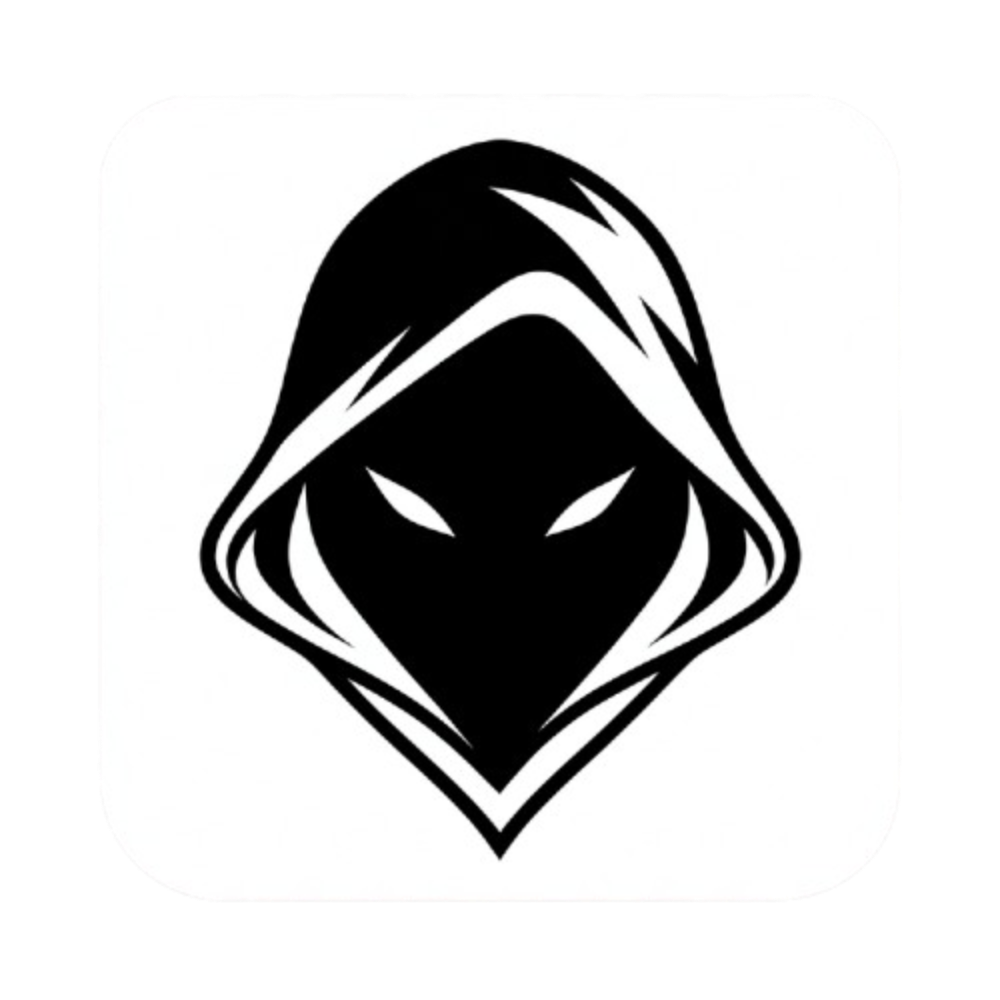

An invisible AI overlay that lives on your screen. Answers questions, solves problems, analyzes screenshots, and feeds you real-time intelligence. Invisible to screen recordings and proctoring software.
Download for Windows (x64)Utilizes Windows low-level WDA_EXCLUDEFROMCAPTURE API to remain completely invisible to screen recording, screen sharing, and proctoring tools like Zoom, Teams, and Webex.
Powered by Deepgram STT. Listens to the conversation and provides real-time coaching customized to your resume and the job description, straight to your screen.
Silent screenshot capture and multi-modal analysis for code, system design, math, and database schemas using blazing-fast models from Groq and Gemini.
Supports Cerebras (fastest text inference on Earth), Groq, Gemini, and OpenRouter with automatic failover and seamless API key rotation.
Download the installer above. The wizard will automatically set up the stealth directory and create a shortcut on your Desktop.
Run Spectra before sharing your screen. It applies low-level WDA protections to hide itself from recording tools. Use Alt+S to silently capture screenshots and Alt+P to process them with AI.
Spectra is designed to be fully controlled via keyboard without ever clicking the window, keeping your mouse free and your eyes on the interview.
100% Free and Open Source. Bring your own free API keys.
View Source on GitHub